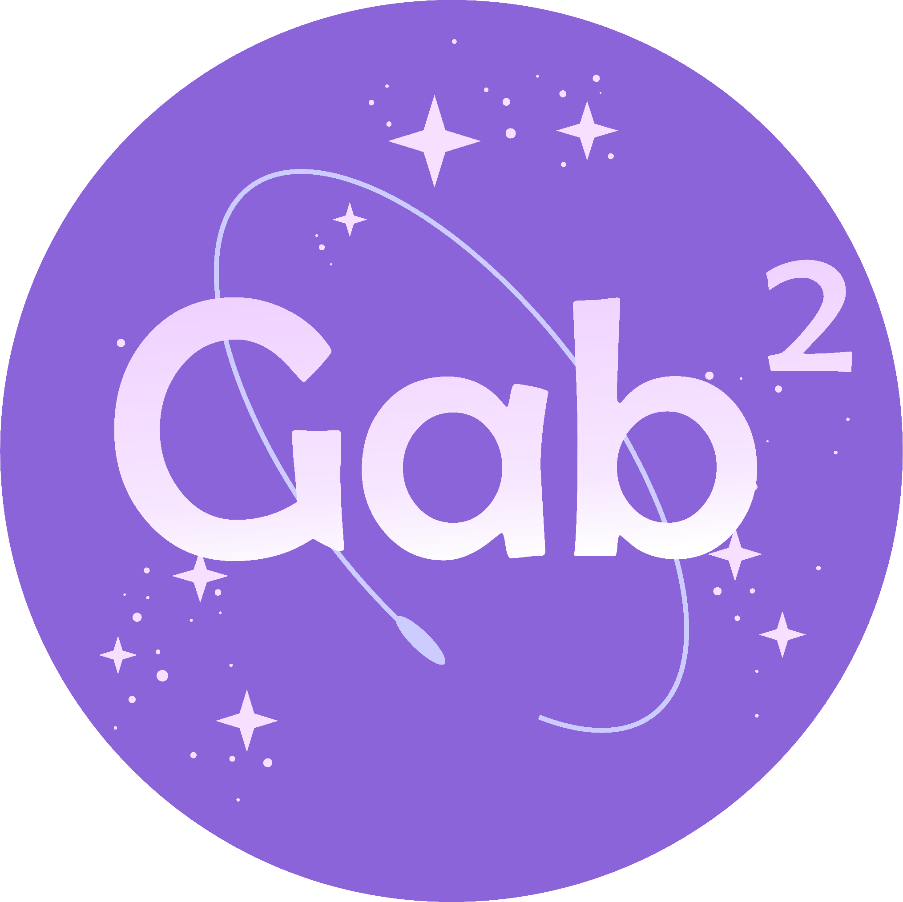

Este site é um portifólio, com o objetivo de apresentar exercícios feitos em JavaScript por mim,
vou contar um pouco sobre mim, minha história e as habilidades trabalhadas.

Gabriely Gabriel Lourenço, Saymon Palermo Martins 2024 - Todos os direitos reservados